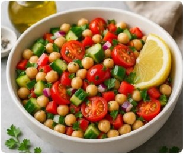
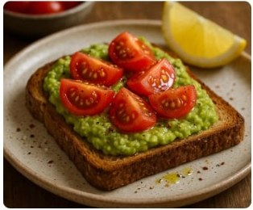
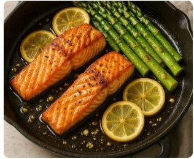
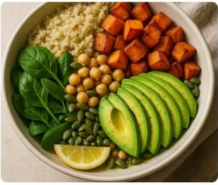
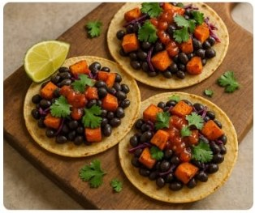
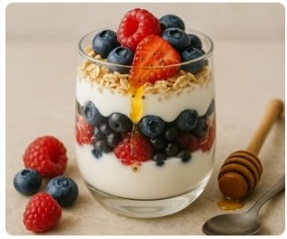
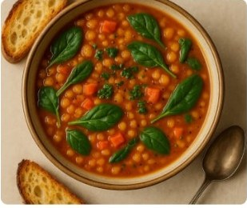
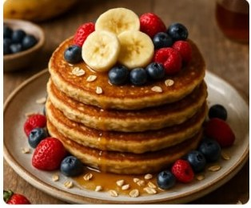

Mediterranean Chickpea Salad
A refreshing, protein-packed salad tossed in a lemon-olive oil dressing.
View RecipeDiscover eight quick, whole-food dishes that fit real-life schedules and taste
amazing. Use the search bar to find a recipe by name or ingredient, or simply scroll
the list and let something delicious catch your eye.

A refreshing, protein-packed salad tossed in a lemon-olive oil dressing.
View Recipe
Creamy avocado spread over toasted wholegrain bread, topped with juicy tomatoes.
View Recipe
A 15-minute weeknight dinner of flaky salmon and tender asparagus.
View Recipe
A balanced bowl of fluffy quinoa, roasted veggies and healthy fats.
View Recipe
Smoky roasted sweet potatoes and black beans tucked into warm tortillas.
View Recipe
Layers of creamy Greek yogurt, fresh berries and crunchy oats for a high-protein snack.
View Recipe
